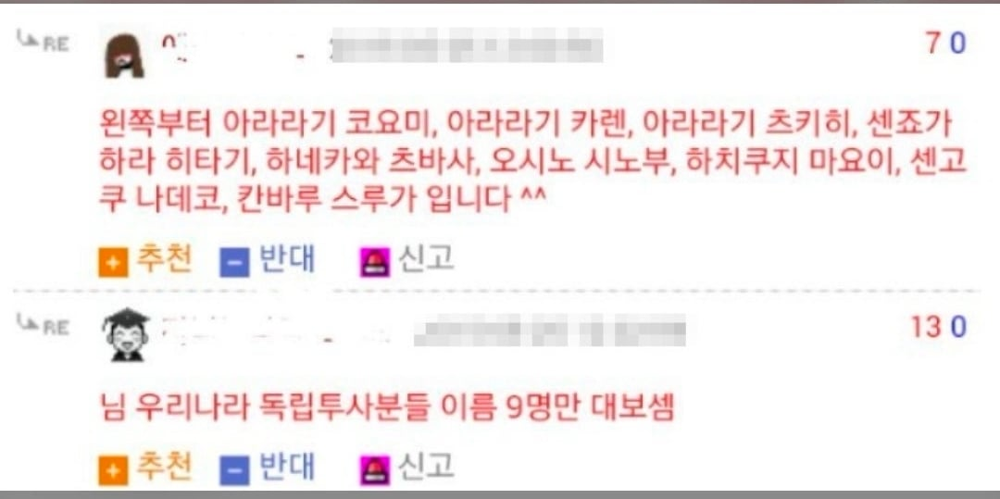
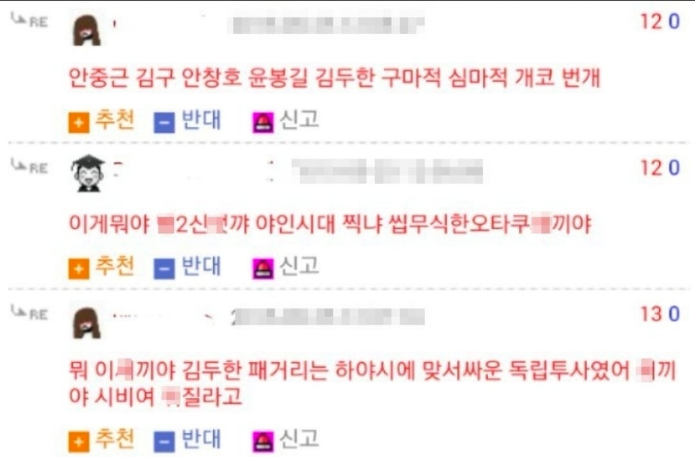

거리의 독립군
각시탈이빠졋네요
주원상 이케
각코이~~~
주원상 각코이~
킷타——-!!!!!!
김두한은 그렇다치고 구마적은 뭔데그럼 하야시랑 새끼까려고 했는데
김두한도 하야시한테 용돈 받고 살았음
구마적이랑 하야시 섹스함?
자칭 "거리의 독립투사" ㅋㅋㅋㅋㅋㅋㅋㅋㅋㅋ
심지어 구마적은 팀도 다른새끼잖아.....
엄북동을 잊지 말아라
구마적 빼고 쌍칼 넣어다오,,
쓰레... 아라라기 군
- 쓰레기라고 하려다 말았다! 남자친구를 쓰레기라고 하려고 했어!
김두한은 서술시기에 따라 옳그떠가 되기도 하고 아니기도 한 양자역학적 인물이구만
김두한은 일제와 맞서싸우고 광복후엔 공산당과 싸우고
독재와 맞서싸운 진정한 협객이지
심마적이 아니라 신마적 아니냐ㅋㅋㅋㅋㅋ
그나저나 대충 검색만 해도 독립투사 9명 이름 찾을 수 있는데 무슨 의미가 있는 질문인지 모르겠네.
그냥 좀 웃으면 세상 멸망하냐?
니 좁아터진 세상을 멸망시켰나 보네 ㅋㅋㅋㅋ 미안하다.
진짜 이런 좆같은댓글 볼때마다 속이 답답하고 열불이 난다
니가 참아
이 댓글은 무슨 의미가 있냐?

거리의 독립군이다 이말이야(상인들에게서 보호비를 걷으며)
깡패 새끼들이잖아
김원봉 김구 안창호 안중근 윤봉길 이봉창 서재필 김좌진 이석영 이시영 신돌석 홍범도 유관순 한용운
이육사 윤동주 문익환 장준하
사람들이 잘 모르는데 하야시 실제인물 한국사람임
역사공부 좀 한 녀석인가?
주먹으로 독립운동